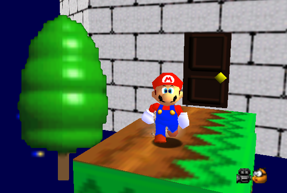

<article class="row">
  <section class="small-12 large-8 page-content">

<h2>Welcome to my Super Mario Galaxy 2 guide!</h2>
  
<p>On this website, you will find some extras in SMG2 that the official guide left out.</p>

<p>Note that the screenshot below is from a ROM hack of Super Mario 64 known as "Super Mario Galaxy 64". I didn't make that ROM hack.</p>

<br>
<br>

<p>

<br style="clear:both" /></p>

<h2>Please let me know if I need something else in this site, or, just compliment it.</h2>
<p>You can <a href="https://github.com/DrewNaylor/drewnaylor.github.io" target=_blank>file an issue in my GitHub repository</a>, or if you just want to ask me a question, you can email me at drewnaylor_apps AT outlook DOT com! (Replace "AT" with @ and "DOT" with a period.) Please note that I may not update this site much as it's archived, and this text here replaced the old Weebly comment box thing. That box asked for first and last names, email address, and the comment, if you're wondering.</p>


  </section>
</article>